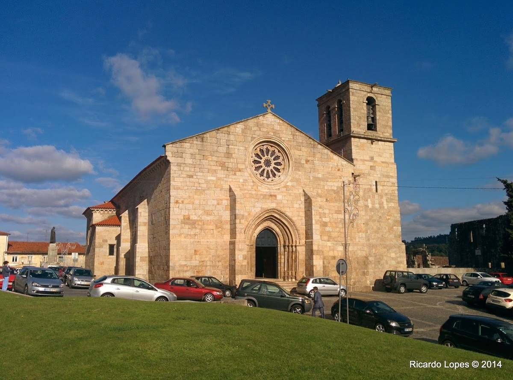

Barcelos
Churches and Chapels

Church Matriz of Barcelos
The Church of Santa Maria de Barcelos, also referred to as Matriz Church of Barcelos or Collegiate, located in the historic center of the town of Barcelos, city and county of the same name, district of Braga, Portugal.
Learn more >
Medieval

Palace of the Counts of Barcelos
The Palace of the Counts of Barcelos, also referred to as the Palace of the Dukes of Braganca, located in the town of Barcelos, city and county of the same name, district of Braga, Portugal.
Learn more >
About this parish
| Administration | |
| Type: | The Parish Council |
| President: | (VI) |
| Demography | |
| Area | |
| Total: | 1,3 km2 |
| Population (2011) | |
| Total: | 4660 |
| Density: | 3 584,6hab/km2 |